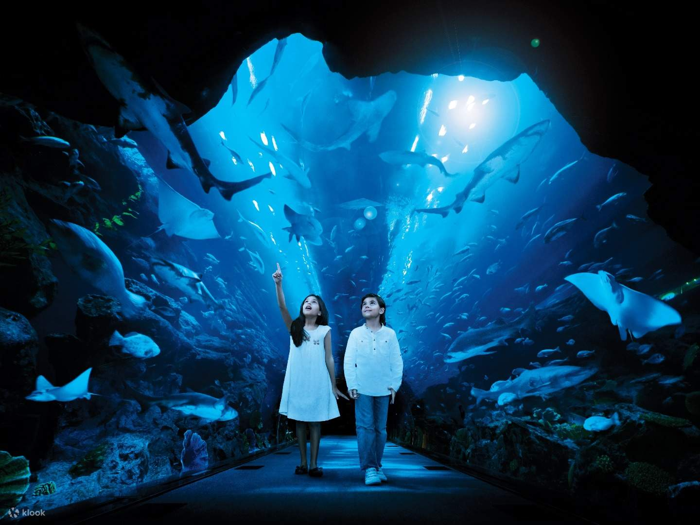
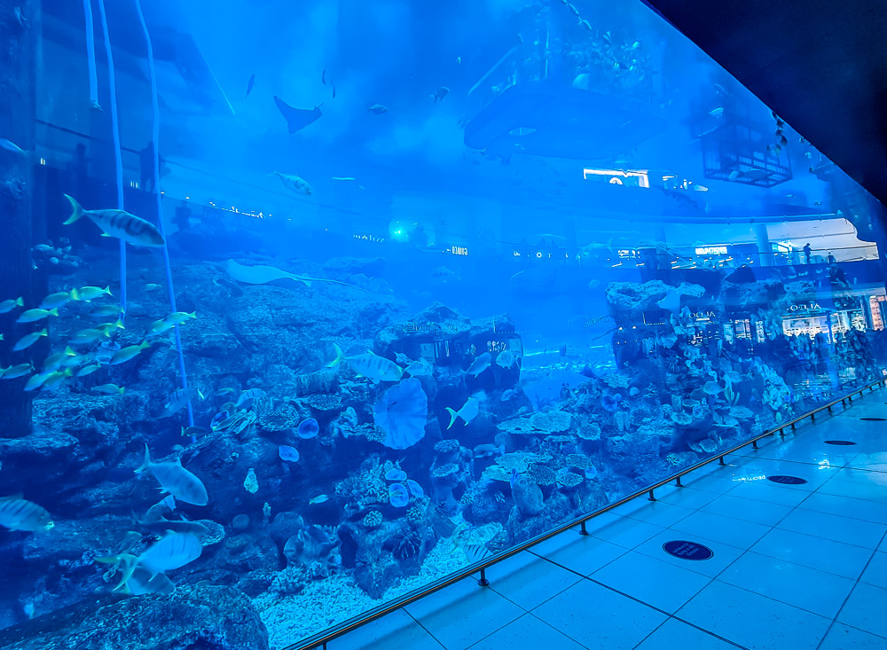
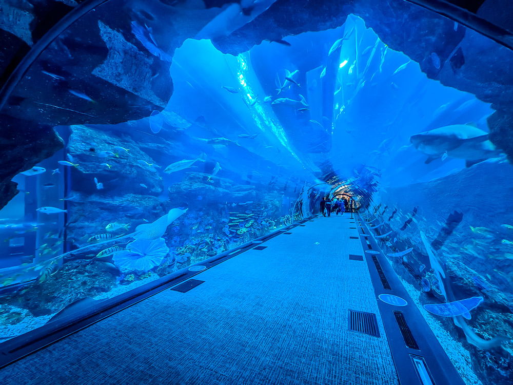
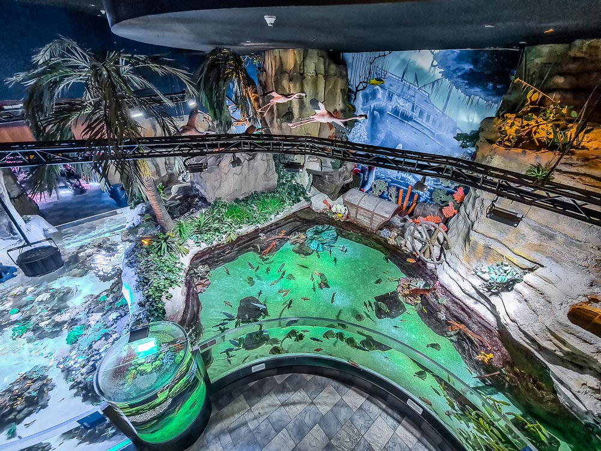
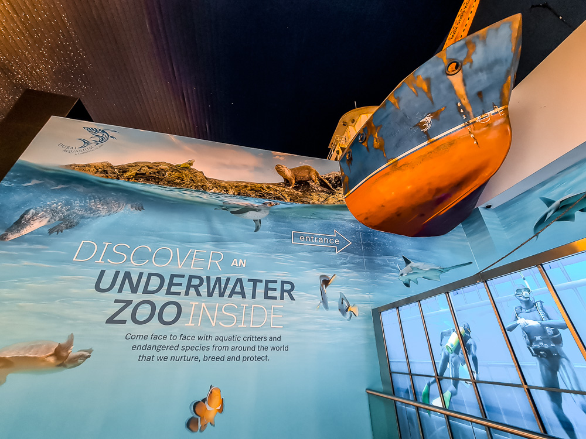
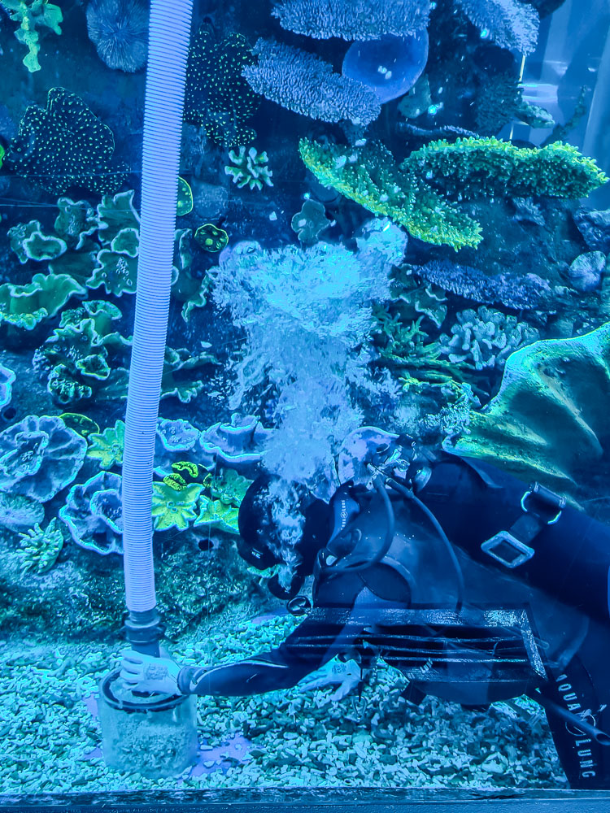
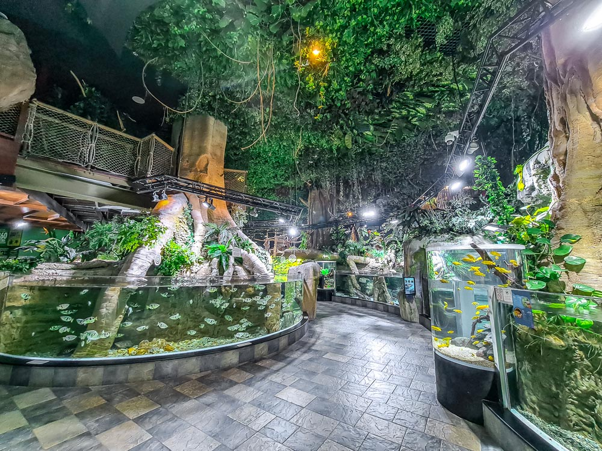
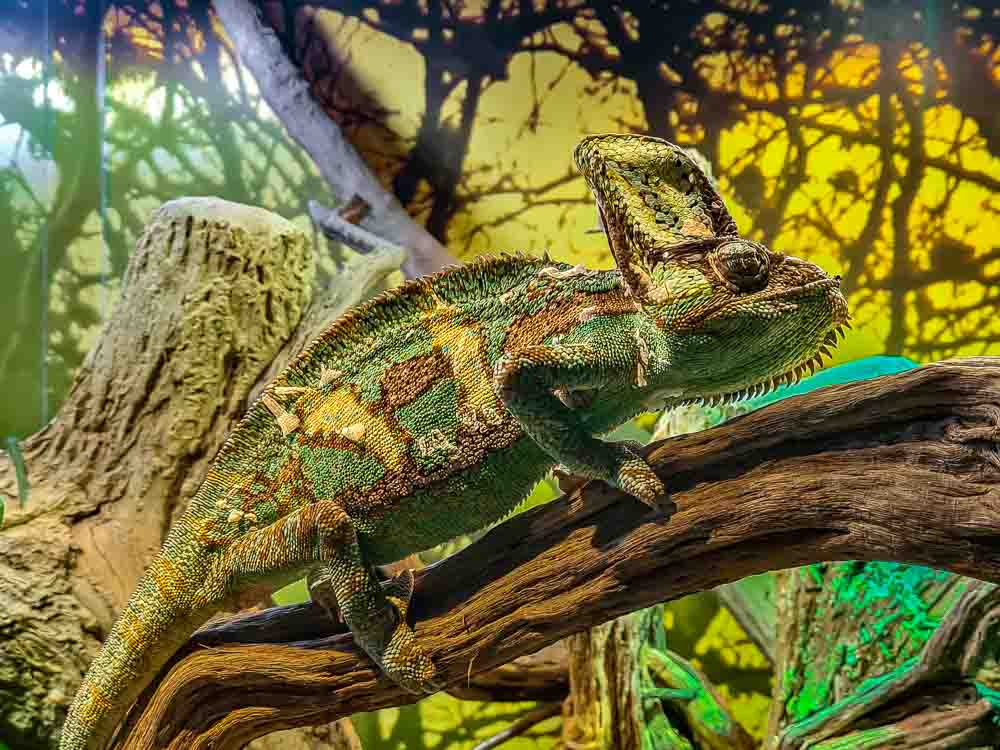

Dubai Aquarium and Underwater Zoo
Location and opening hours
The Dubai Aquarium and Underwater Zoo is located in the famous Dubai Mall. I have to admit, it’s strange to see a massive aquarium right next to H and M. It is unique and crazy at the same time, but hey, it’s Dubai, anything is possible!
The Dubai Aquarium and Underwater Zoo are open 365 days a year, on weekdays from 10.00AM – 10.00PM and weekends from 10.00AM – 00.00 Midnight.
Want to send all your pictures and videos to your friends while enjoy the Dubai activities? Traveltomtom recommends you to get a prepaid sim card for the UAE at Dubai Airport. The easiest way to stay online and avoid high roaming costs. Click on the link for a complete guide. There is also a guide for buying a sim card at Sharjah Airport.
Aquarium Tank

The Dubai Aquarium is one of the largest aquariums in the world. It has a volume of more than 10 million Liters, and is sized 32 by 8 meters. The aquarium includes various shark species including the largest collection of sand tiger sharks anywhere, rays, giant bass, and huge schools of the most diverse fish species.
Even though the Dubai Aquarium is part of the Underwater Zoo, you don’t necessarily need to buy a ticket if you just want to see the aquarium. The largest part of the aquarium is located in the public space of the Dubai Mall, and is therefore accessible to everyone, and free to view. It is actually already easy to spot various animal species.
However, the viewing is only allowed from a fair distance and you won't be able to get close to the glass wall. This is only for those who buy a ticket for the Dubai Aquarium and Underwater Zoo. But buying a ticket gives you much more than just getting close to the glass wall.
If you want that cool picture with you and the massive glass wall of the Dubai Aquarium you will have to buy a ticket.
Aquarium Tunnel

Although it is nice to view the aquarium from a distance for free, it is highly recommended to buy a ticket and thus be able to walk through the aquarium tunnel. It is very special to walk through the 48 meter aquarium tunnel and be surrounded by the underwater world and marine life. It’s actually really fun to walk through and have sharks and stingrays swimming overhead, one of the many amazing things to do in Dubai.
There is much more you can do here, what about a glass-bottom boat tour, have a mermaid makeover for the kids, get wet in a snorkeling cage, or the ultimate adrenaline kick, put on an oxygen tank to go swimming with the sharks. Yes, you can go on a guided scuba dive inside the aquarium and get up close and personal with the marine life.
Underwater Zoo

Right next to the aquarium you’ll find the Underwater Zoo, this is an underwater zoo with a large number of aquariums. These aquariums contain thousands of fish, including a large school of piranhas. You will also find reptiles, otters, crocodiles, parrots, jellyfish and even penguins.
They are all animals that are suitable to keep in this zoo. Don’t expect to encounter elephants or lions here, because you won’t find them.
The Underwater Zoo is built like a rainforest environment, which makes it actually really cool, and bizarre at the same time, realizing you’re actually still inside the Dubai Mall.
It has to be said, if you want to visit the penguins, this is not included in the regular tickets, you have to buy an extra ticket.
Animal Encounter

There are several animal encounters you can do while visiting the aquarium and zoo. Keep in mind that you have to pay extra if you want to do that. You can go behind the scenes for an exclusive tour of the otters home in the zoo and interact with these cute animals.
Or how about meeting, touching and feeding fifty rays in an exhilarating interaction with these wonderful creatures. And what do you think of the more family friendly experience of the shark trainer encounter, where you will be educated about shark species as well as how they’re taken care of in Dubai. Learning all about sharks while going behind the scenes and assisting the staff.
Presentation and Feeding

Next to the various animal encounters, there are also daily presentations and feedings. There are several feeding programmes for the rays, sharks and king croc. Please check the current timings when visiting. Experienced staff members are positioned throughout the aquarium and underwater zoo to answer any of your questions. For the otters and piranhas they have regular presentations and feedings daily, please check timings upon your visit.
Education

Education at Dubai Aquarium & Underwater Zoo includes diverse programs for school, guest, and community education. The first-of-its-kind regional initiative is aimed at enhancing awareness of marine animals and habitats while raising conservation awareness. Based on the three principles of ‘Do, Find and Think’, students can observe, investigate, and discuss ecological concepts with trained educators while interacting with a diverse range of aquatic life. All programs have been approved by the Ministry of Education as a recommended program for school field trips.

Traveltomtom does of course not encourage the caging of wild animals, but we do think that aquariums and underwater zoo's can have a positive effect on conservation works by educating and showing how beautiful but moreover how precious and vulnerable life on our planet is.
When visiting the Dubai Aquarium we realized even more how unique and special the underwater world on earth actually is. Learning about the hidden life below the surface remembers you once again that the ocean is the source of life and that we reached a point of no return when it comes to preserving the planet.
Again every Traveltomtom team member believes that animals should live in the wild. Having that said, we do find the educational aspect of zoos and aquariums rather interesting and good. Dubai Aquarium and Underwater Zoo offers you a fascinating insight into the world’s most mysterious marine life and that is we definitely recommend visiting the Dubai Aquarium and Underwater Zoo.